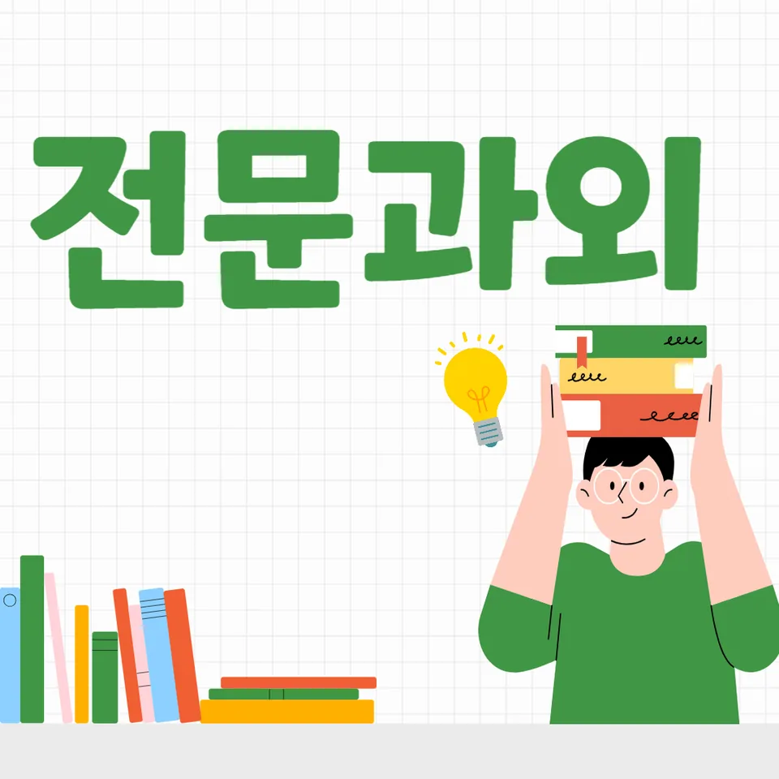

PageType : DONG
URL : /경기도과외/부천시과외/오정구과외/삼정동과외/
지역 학습환경과 학생들의 변화
삼정동과외를 알아보는 학생들 사이에서 가장 먼저 달라지는 지점은 ‘시간을 쓰는 방식’입니다. 수업 전엔 과제를 미루던 학생이 수업 후엔 오늘 할 일을 먼저 정리하고, 모르는 부분을 바로 질문하는 흐름이 생깁니다. 특히 삼정동의 학습 환경은 학원 선택지가 다양해서 학생이 “여기선 배우고, 저긴 숙제만 한다”는 식으로 동선을 나누기 쉬운데, 그 과정에서 오히려 공부 습관이 흔들리기 쉽습니다. 삼정동과외는 이런 흔들림을 줄이면서 학생의 루틴을 하나로 연결해 줍니다.
학부모가 체감하는 변화는 성적표의 숫자보다 학습 태도의 안정성에서 먼저 보입니다. 수업 중에 필기를 하는 학생도, 수업 후엔 복습을 건너뛰는 경우가 많았는데, 삼정동과외에서는 복습을 ‘분량’으로 정하기보다 ‘확인 방식’으로 정합니다. 그래서 학생이 “다 했어”가 아니라 “이 유형을 다시 풀면 맞히는지”로 체크하게 됩니다.
학부모가 많이 고민하는 부분
학부모는 대체로 한 가지 질문으로 수렴합니다. “우리 아이가 지금 왜 성적이 정체됐을까?” 삼정동과외 상담에서도 가장 자주 나오는 고민은 교과 개념을 아는 것과 문제를 푸는 것이 분리되어 있다는 점입니다. 예를 들어 시험 직전엔 요약노트를 만들지만, 실제 시험에선 보기 해석과 계산 순서가 무너져 점수가 잘 나오지 않는 학생이 많습니다. 이럴 때는 설명을 더 듣는 것보다, 학생이 스스로 확인하도록 설계를 바꾸는 편이 효과적입니다.
또 한 가지는 가정 내 분위기입니다. 같은 시간을 공부해도 학생이 집중을 유지하지 못하면 결국 “시도만 많고 결과가 적은 날”이 반복됩니다. 삼정동과외는 학부모가 도와줄 수 있는 범위를 줄이고, 학생이 혼자 시작하고 마무리하는 구조를 만드는 데 초점을 둡니다. 결과적으로 학부모의 잔소리 빈도가 줄고, 학생의 공부습관이 자연스럽게 고정됩니다.
학년이 올라갈수록 달라지는 공부
초반엔 문제를 많이 풀면 성적이 오르는 것처럼 보이지만, 학년이 올라가면 전략이 바뀌어야 합니다. 특히 중등 과정에서는 개념을 빠르게 훑는 방식이 오히려 누적 오류를 키우기도 합니다. 삼정동과외에서는 학년이 올라가는 흐름에 맞춰, 같은 과목이라도 접근 순서를 조정합니다. 1학년엔 기초를 정확히, 2학년엔 유형을 묶어 재현, 3학년엔 시험 서술과 시간 배분까지 연결합니다.
고등으로 넘어가면 자기주도학습의 의미가 더 선명해집니다. 단순히 “혼자 공부했다”가 아니라, 학생이 스스로 무엇을 약점으로 판단하고 어떤 순서로 메우는지까지 보이게 됩니다. 그래서 삼정동과외는 학년 전환 시기에 학습 태도를 먼저 점검합니다. 학생이 계획을 세우는지, 계획을 수정하는지, 수정 기준이 점수인지 실수 유형인지가 성적을 좌우합니다.
학교생활과 내신 준비
내신은 수업 내용의 범위와 학교별 난도가 함께 움직입니다. 그래서 학교생활 리듬을 무시한 공부는 시험 직전에 흔들릴 가능성이 큽니다. 삼정동과외를 받는 학생들은 보통 학교 시험 일정이 나오면 그때부터 공부가 ‘급발진’하는 편인데, 그 전 주부터 개념 점검을 넣으면서 부담을 분산합니다. 내신 준비에서 중요한 건 마지막 암기 시간이 아니라, 수업에서 들은 내용을 “다음 날 바로 재구성”하는 능력입니다.
학생이 과목별로 어느 단원에서 자주 틀리는지 파악되면 내신 전략은 훨씬 현실적으로 바뀝니다. 예를 들어 국어의 경우 지문 해석 속도만 빠르게 하면 해결되는 문제가 아니라, 질문 형태에 따라 답을 조직하는 훈련이 필요합니다. 수학과 과학은 계산 실수와 개념 적용 실수가 섞일 때가 많아, 시험 전 체크 항목을 세분화해야 점수로 이어집니다.
자기주도학습이 중요한 이유
자기주도학습은 ‘공부를 스스로 한다’는 말로 끝나지 않습니다. 학생이 스스로 시작하고, 스스로 점검하며, 스스로 다음 행동을 선택할 수 있어야 합니다. 삼정동과외는 학생이 스케줄을 지키는 것을 목표로 삼기보다, 왜 지키지 못하는지 원인을 분해해 조정합니다. 과제가 많아서 막히는지, 이해가 안 돼서 멈추는지, 피로로 집중이 깨지는지에 따라 해결책이 달라지기 때문입니다.
시간관리도 결국 자기주도학습의 일부입니다. 예를 들어 시험 전엔 시간이 부족해 보이지만, 실제로는 ‘문제 풀다 멈추는 구간’이 반복됩니다. 삼정동과외에서는 그 구간을 줄이는 방식으로 학습 태도를 교정합니다. 문제를 오래 붙들기 전에 어떤 신호를 기준으로 멈출지 정하고, 멈춘 뒤엔 어떤 방식으로 회복할지 루틴을 만듭니다. 그러면 학생이 공부를 더 하는 게 아니라, 같은 시간의 질이 올라갑니다.
공부 습관이 성적에 미치는 영향
성적은 노력의 양만큼이나 습관의 형태에 좌우됩니다. 삼정동과외를 통해 관찰되는 변화 중 하나는 ‘오류 처리 방식’입니다. 어떤 학생은 틀리면 다시 풀지 않고 넘어가는데, 어떤 학생은 틀린 이유를 문장으로 써보고 같은 유형을 짧게 재도전합니다. 전자가 다음 시험에서 반복 실수를 끌고 가는 경우가 많고, 후자는 내신에서도 꾸준히 안정됩니다.
또한 공부습관은 과목 간 연결에서 더 크게 드러납니다. 수학 개념이 흔들리면 과학 서술에서도 근거 정리가 약해지고, 국어 독해가 느리면 모든 과목의 시간 배분이 무너집니다. 그래서 삼정동과외는 한 과목만 잡지 않고, 학생의 전체 학습 태도를 기준으로 조정합니다. 시험이 가까워질수록 “무엇을 더 할지”보다 “무엇을 줄이고 무엇을 남길지”가 중요해집니다.
체크해야 할 학습 포인트
- 과제 완료 여부보다 ‘오답 유형’이 기록되고 있는지 확인하기
- 시험 전 복습이 분량이 아니라 ‘재현(다시 풀어보기)’ 중심으로 구성되는지 점검
- 수업 중 질문이 줄어들거나 집중이 흐려지는 시간대를 파악하기
- 자기주도학습 계획이 세워져도 수정 기준이 부족한지 점검하기
위 항목이 잡히면 삼정동과외의 효과가 더 선명하게 나타납니다. 학생이 공부를 시작할 때의 망설임이 줄고, 시험 기간에도 흔들리지 않는 이유가 설명됩니다. 결국 내신은 지식의 양보다 학습의 연속성과 회복 능력이 좌우하므로, 학습 체크 포인트를 일찍 정해두는 편이 유리합니다.
시험기간 분위기와 실전 대비
시험기간에는 학습 분위기가 급격히 달라집니다. 어떤 학생은 계획대로 움직이지만 실전에서 긴장해 점수가 떨어지고, 어떤 학생은 긴장을 이기려다 쉬는 시간이 무너져 컨디션이 흔들립니다. 삼정동과외에서는 이런 상황을 가정하고 연습을 넣습니다. 예컨대 시험과 비슷한 시간 제한을 걸어 풀고, 풀이 후에는 시간 사용과 실수 원인을 같이 정리하게 합니다.
실전 대비에서 중요한 건 시험 당일의 감이 아니라, 시험 직전의 준비 방식입니다. 전날엔 새로운 단원을 시작하기보다 약점 유형을 짧게 확인하고, 당일엔 흔들리는 과목의 순서와 시작 문제를 미리 정해 둡니다. 이렇게 하면 학생이 불안해도 행동이 흔들리지 않아서 내신과 시험의 결과가 안정적으로 따라옵니다.
자주 묻는 질문
삼정동과외를 시작하면 학생 공부습관이 바로 바뀌나요?
처음엔 진단과 루틴 설계가 우선이라 속도감은 다를 수 있지만, 대부분 수업 후 과제 처리 방식과 오답 기록부터 변화를 체감합니다.
내신 준비는 어떤 방식이 가장 효율적일까요?
수업 내용 재구성→유형별 재현→오답 유형 점검 순으로 진행하면 학교 시험 범위를 따라가며 점수로 이어지기 쉽습니다.
자기주도학습을 잘 못하는 학생도 가능한가요?
가능합니다. 목표를 ‘시간 채우기’보다 ‘시작-점검-수정’이 되도록 설계하면 스스로 공부하는 구조가 만들어집니다.
시험기간엔 무엇을 먼저 해야 하나요?
새 내용 진입보다 약점 유형을 짧게 확인하고, 시간 배분과 실수 원인을 정리하는 연습을 먼저 배치하는 편이 효과적입니다.
학부모는 집에서 무엇을 도와주면 좋나요?
설명보다 확인 기준을 정해 주는 것이 좋습니다. 예를 들어 오답 유형 기록 여부, 재현 연습 여부처럼 관찰 가능한 체크 항목을 합의하면 잔소리가 줄고 학습이 안정됩니다.
